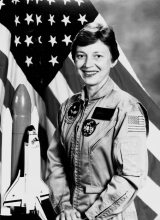

Please note: the AAS Obituaries are temporarily being hosted on this website while their full content is being ingested into the PubPub publishing platform newly adopted by the Bulletin of the American Astronomical Society. When the migration is complete, your existing links will take you to the final, migrated content. Contact peter.williams@aas.org with any questions.
Dianne K. Prinz (1938-2002)
Dr. Dianne Kasnic Prinz died 12 October 2002 at the Hospice of Northern Virginia after a long struggle with lymphatic cancer. She worked for over 29 years until retirement at the Naval Research Laboratory in Washington, DC on sounding rocket, space shuttle, and satellite experiments to observe the Sun at ultraviolet wavelengths from space.
Dianne Prinz was born 29 September 1938. She received her BS degree from the University of Pittsburgh in 1960, and a PhD in Physics from Johns Hopkins University in 1967, where she was a University Fellow 1960--1964 and a Gilman Fellow 1960--1963. She was a Research Associate in the Physics Department of the University of Maryland 1967--1971 and, from 1971 until her retirement in February 2001, she was a Research Physicist at the Naval Research Laboratory (NRL). At the time of her retirement she was Head of the Solar Radiation Section, Solar Physics Branch, Space Science Division of the Naval Research Laboratory and was supervising the work of a team of scientists that was operating the SUSIM (Solar Ultraviolet Irradiance Monitor) experiment on the UARS (Upper Atmosphere Research Satellite) spacecraft as well as reducing and analyzing the observations.
Dianne was a member of the Washington Academy of Science (elected 1976 and Fellow 1987), served as Vice President of the National Capital Section of the Optical Society of America (1976), and received the Navy Award of Merit for Group Achievement (1985), the NASA Public Service Group Achievement Award (1987), and the Navy Meritorious Civilian Service Award (2001). Her professional memberships included the American Astronomical Society and its Solar Physics Division, the American Geophysical Union, and Sigma Xi. She had over 60 publications in her scientific bibliography.
Early in her career at NRL, Dianne developed a Lyman alpha spectroheliograph sounding rocket payload. Launching at White Sands Missile Range in 1972, she obtained high spatial resolution (for that day) full disk solar images. Her published analysis was pioneering for the study of the Lyman alpha irradiance and established the range of brightness of solar active regions relative to the quiet disk.
Dianne also had a keen interest in understanding how the upper atmosphere responds to changing solar conditions, a field of research now called ``space weather." Early in her career she collaborated with NRL scientists Robert Meier and Phillip Mange on the analysis of some of the first satellite remote sensing observations of the atmosphere and ionosphere. That work laid the foundation for many future NASA and DoD space weather programs, and throughout the years she continued to participate in the design of atmospheric remote sensing instruments that are flying in space today.
In 1978 Dianne was selected by NASA to train as a Payload Specialist astronaut to operate the solar instruments that were to fly on the Spacelab 2 mission aboard the Space Shuttle. From a group of four in training (the others were Drs. J.D.-F. Bartoe, Loren Acton, and George Simon), Bartoe and Acton were finally selected and flew on the Spacelab 2 mission in 1985, when Dianne served as mission communicator with the Payload Specialists. She and Simon were due to fly on a planned follow-up second flight but the aftermath of the explosion of the Challenger Space Shuttle shortly afterward led to cancellation and the end of this phase of her career. In addition to the scientific aspects of her work, she made a substantial effort to communicate her enthusiasm to the public. After the Spacelab 2 mission she often gave presentations to adult and student audiences on her experiences, sometimes bringing along her flight suit. She received letters from all over the world from correspondents who had read of her role.
Dianne was a member of the team at NRL that developed the requirements for a new instrument to accurately monitor, over many years, the solar ultraviolet irradiance, which was known to vary considerably and is a crucial input to many processes in the Earth's upper atmosphere. It was critical to overcome the challenge of maintaining the absolute calibration of an ultraviolet spectrometer. The new instrument, called the Solar Ultraviolet Spectral Irradiance Monitor (SUSIM), was flown first on an early Space Shuttle flight (STS-3) and next on the NASA Spacelab 2 mission, for which she had trained as an astronaut payload specialist. The SUSIM design was then revised for a long-term flight aboard the Upper Atmosphere Research Satellite (UARS). After the launch in 1991 of the UARS SUSIM, she led the NRL team that ran the UARS SUSIM flight operations and developed the data analysis software. After the death of Guenter Brueckner, she became the Principal Investigator of UARS SUSIM and continued the operation, analysis, and publication of these critical scientific observations. To determine the SUSIM absolute calibration, careful studies were performed to separate the degradation of the instrument response from the true solar variability. Extensive work was necessary to model the degradation of the instrumental sensitivity with time, the stray light correction, the field-of-view correction, and the wavelength scale. Dianne managed these tasks and produced a long term, well-calibrated history of solar ultraviolet irradiances over the full activity levels of a solar cycle.
Dianne grew up on a farm in southwestern Pennsylvania, the daughter of Joseph J. Kasnic, a steel worker and part-time farmer, and Anna M. Kosyrich Kasnic, a homemaker, part-time teacher and accomplished artist and musician. Diane will be remembered for her deep love of animals, whether her beloved horse Chesterfield or stray or hungry cats in her neighborhood. Her marriage to Dr. Gary Prinz ended in divorce. She is survived by her sister and brother. Diane had an early interest in science and, throughout her career, worked as an experimental physicist and designer of optical instrumentation. She was a pioneer in her interests in space science, and usually overcame the obstacles she encountered in her field and at a time when she was often the first woman in authority encountered by male co-workers. She had a no-nonsense attitude in her work relations, but inspired the friendship of colleagues through her genuine good will, competence, and utter lack of pretension.
Photo courtesy of the Naval Research Laboratory
Obituary written by: J. W. Cook (Naval Research Laboratory), R. A. Howard (Naval Research Laboratory)
BAAS Citation: BAAS, 2003, 35, 1469
SAO/NASA ADS Bibcode: 2003BAAS...35.1469C